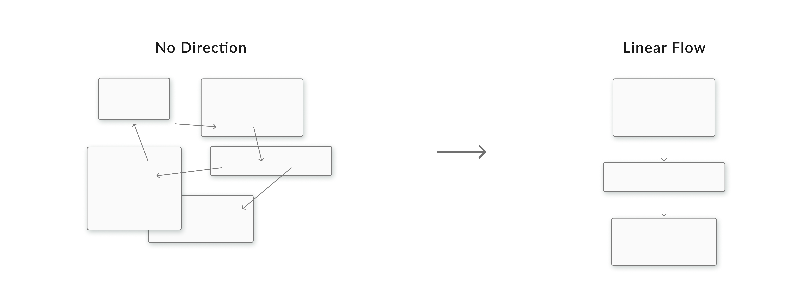
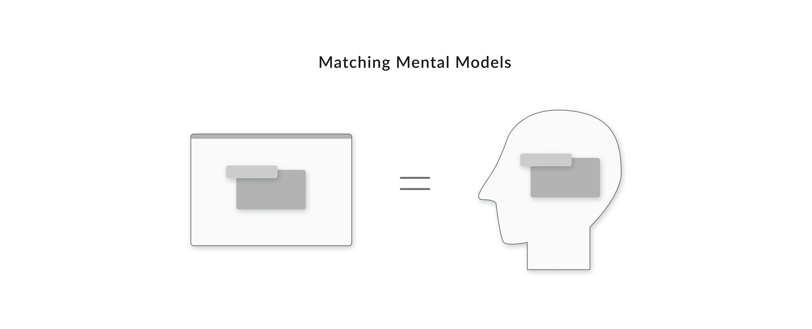
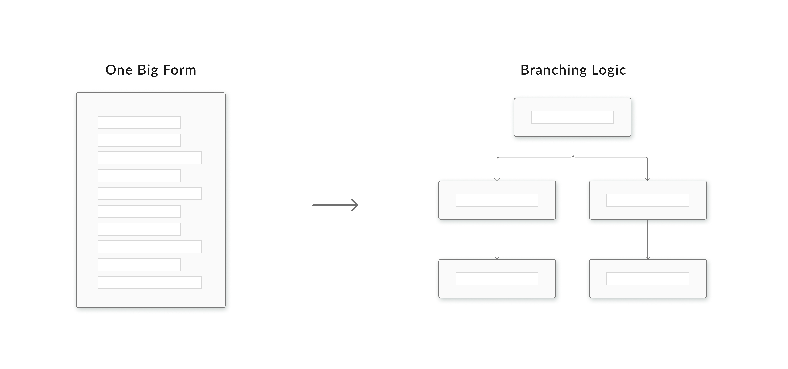

Improving data validity of incident reporting for railroad workers.
Timeline —
Spring 2023
15 weeks
Role —
UX Designer
Team —
Product Owner
5 Angular Developers
Skills —
User Research
Product Design
Design Systems
Adobe XD
01 Overview
Designing a guided interface that streamlines the reporting process and ensures accurate collection of key information.
My internship team redesigned the Incident Management System (IMS), an internal application for reporting safety incidents. A key goal of the redesign was to better comply with government regulations on what information must be reported to the Federal Railroad Administration (FRA).
02 Project Scope
As the sole designer, I identified usability & data validity issues with the current system, mapped the reporting workflow to the users’ needs, and created high-fidelity prototypes to test and iterate on.
I worked closely with business and engineering stakeholders to understand the problems with the system’s results, and establish metrics to track improvement. I also interviewed end users to better understand the usability issues contributing to the data’s shortcomings, and tested + validated designs in a workshop with 21 users and stakeholders.
03 Key Redesign Features
While the details of this design are under NDA, I can share some of the research insights I made and the design principles they led me to.
My research found that most users report an incident < 2x per year, so the system must be easily accessed by unfamiliar users. The original interface with layers of nested tabs and no specific order was frustrating and opaque to infrequent users. So, we redesigned the process into a step-by-step, instructed linear flow, a change that greatly reduced software bugs and helped users complete the report without any missing information.
The original system was written by government reporting experts in the dense regulatory language of the FRA, and grouped information by the pages of the old paper form reports. It didn’t match the language, mindset, or experience of the field workers who actually report the incidents. I reworked the information architecture based on user feedback like card sorting exercises, and rewrote legislative terminology into questions our users could easily understand.
To minimize the cognitive load on the user, I proposed the use of progressive disclosure to reduce the amount of information asked on each screen and overall. By implementing branching internal logic, we were able to remove unnecessary fields when reporting different incidents (as many as 50 fewer fields for some scenarios!)
04 Learnings ✨
Working on this product was an exciting challenge! Contact me for more details.
A week after I was placed on the project, a major derailment placed Norfolk Southern in the national spotlight, and proved the need for huge changes across the Safety & Environmental department. Under increased scrutiny, shifting priorities, and a company reorganization, I learned to manage high pressure in a cross-functional team, and balance the needs of many different stakeholders.
As the only designer working on the product, I had to articulate the value of user-centered design to my cross-functional team, and fight for the opportunity to interface directly with users. When users were inaccessible, I also learned to leverage alternative methods such as cognitive walkthroughs, heuristic analyses, and analyzing live data to gather insights.
Being the only woman, intern, and designer in a daily stand-up of 40+ people pushed me way out of my comfort zone. I accomplished things I couldn't imagine just a few months ago, like shaping the new product's functionality, leading a UXR workshop, and presenting my work to a group of more than 20 high-up stakeholders!
05 Thank you~ üíå
Despite (or maybe because of?) the project's heightened visibility and expectations, I‚Äôm so happy with the work we managed to accomplish, and proud to be a part of something that will help prevent future accidents. I‚Äôm really grateful to my mentor James for the infinite support, and to our product owner Nathan for the trust. I grew so much this semester, and I‚Äôm so thankful to have had this opportunity üòä
Up next: Oracle Health / Oracle Procurement / Norfolk Southern / Bits of Good / Keeb / Spence